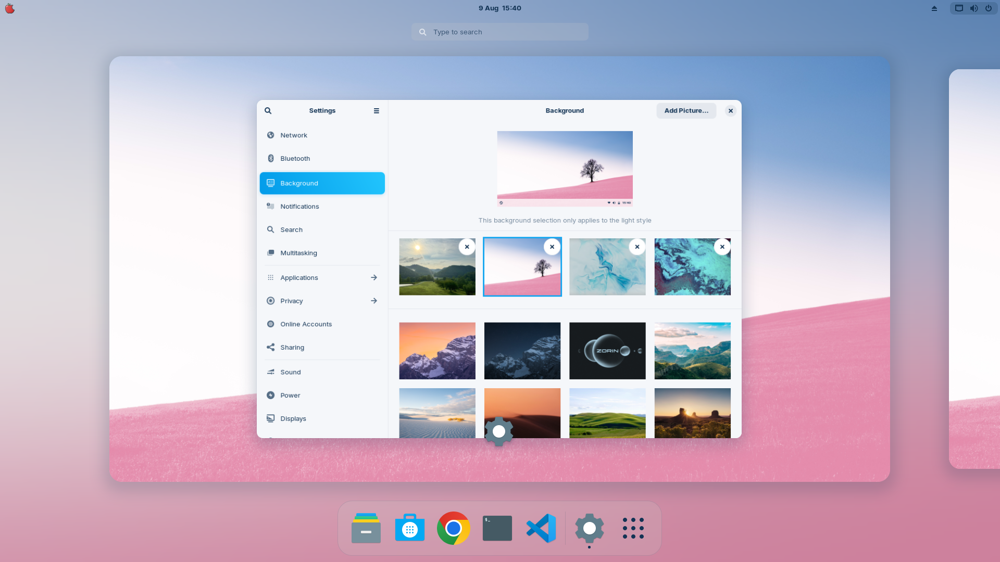

Comparación de Sistemas Operativos
A continuación se presentan las características técnicas principales de cada distribución:
| Característica / Requisito | Linux Mint (Cinnamon / XFCE) | Zorin OS 18 (Core / Lite) |
|---|---|---|
| Base del Sistema | Ubuntu LTS | Ubuntu LTS |
| Variantes y Entornos | Cinnamon (Principal), MATE, XFCE (Ligero) | Zorin Desktop / GNOME (Core), XFCE (Lite) |
| Procesador (CPU) Recomendado | 2 núcleos (XFCE) / 4 núcleos (Cinnamon) | 2 núcleos (Lite) / 4 a 8 núcleos (Core) |
| Memoria RAM Mínima / Recomendada | 2 GB (XFCE) / 4 GB (Cinnamon) | 2 GB (Lite) / 4 a 8 GB (Core) |
| Memoria de Video (VRAM) | 512 MB (Integrada) / 1 GB (Dedicada) | 512 MB (Lite) / 2 GB+ VRAM (Core para efectos) |
| Modos de Interfaz (Layouts) | Estilo clásico Windows/Linux tradicional | Windows 11, Windows Clásico, macOS, GNOME Puro |
Ventajas Destacadas
- Linux Mint: Consumo de recursos moderado, interfaz tradicional y alta estabilidad.
- Zorin OS 18: Diseño visual moderno similar a Windows/macOS y gran facilidad de uso.
Galería de Interfaces


Video Promocional
¿Qué distribución y edición se adaptan a tu PC?
Ingresa las especificaciones de tu hardware para calcular la mejor opción:
Ingresa los datos arriba para ver el resultado aquí.